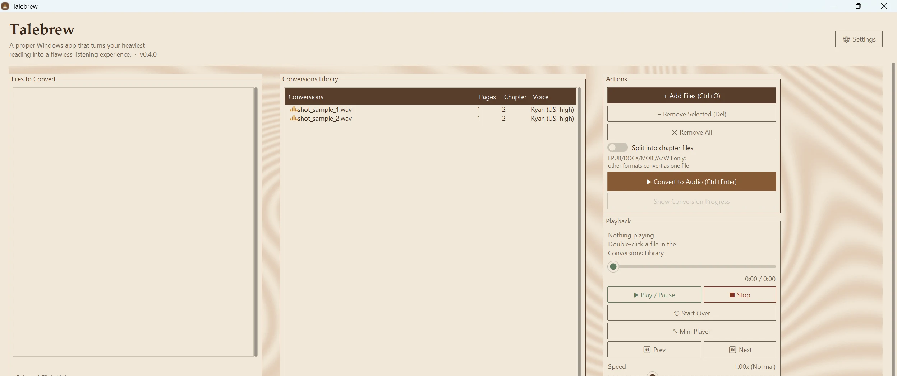

A proper Windows app that turns your heaviest reading into a flawless listening experience.
Checking latest release…

A real Windows app for turning documents into audiobooks, built for listening to long things start to finish.
Your system's built-in voice works immediately, or install Piper for natural-sounding offline neural speech: over 30 curated voices across nine languages, with sample previews before you download.
Adjust playback speed and pitch live while you listen, instead of baking them into the audio file at conversion time. Speed stays pitch-preserving, so faster never means a chipmunk voice.
Convert a whole book into one file per chapter automatically for EPUB, DOCX, and MOBI/AZW3. Pages and chapters show right in your library, estimated from the text when a format has no real page count.
Drop named bookmarks anywhere in a file, set a sleep timer that pauses (not stops) after 15–60 minutes, and let finished files auto-advance to the next one in your library.
Optionally pauses itself the moment a Zoom call, another app's audio, or a Windows notification sound starts, and resumes automatically once things go quiet again.
Text is cleaned up before synthesis, so headers, footers, page numbers, and OCR artifacts get stripped out. Larger-text and WCAG AA-checked contrast modes make the app itself easy to use, too.
An optional MCP server lets Claude Desktop, Claude Code, or any other Model Context Protocol client convert files and check on them directly, no clicking through the GUI required.
Talebrew ships a headless MCP server (mcp_server.py) exposing four tools:
list_supported_formatsSee which file types Talebrew accepts.convert_fileStart a conversion in the background; returns a job id immediately.get_conversion_statusCheck progress, completion, or failure for a job id.list_conversionsBrowse the Conversions library with pages/chapters/voice metadata.A conversation with your agent could look like: "Convert ~/Documents/mybook.epub to audio using Piper, then let me know when it's done."
A real Windows Installer package with a Start Menu shortcut, uninstaller, and in-app updates included. No Python install needed.
Windows 10 or 11. The Piper neural voices download separately, on demand, from inside the app, so the installer itself stays small.